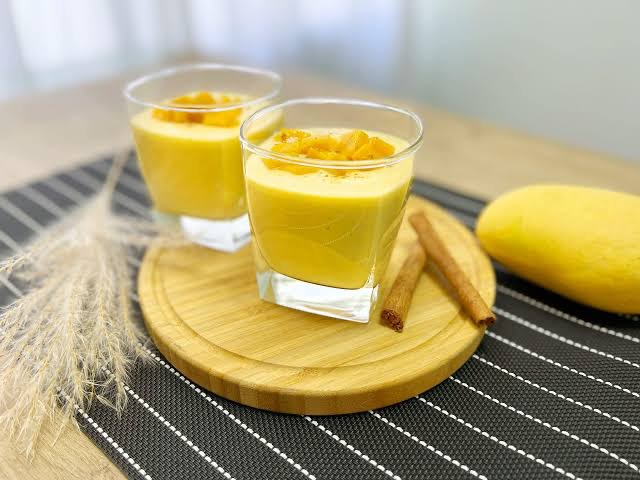
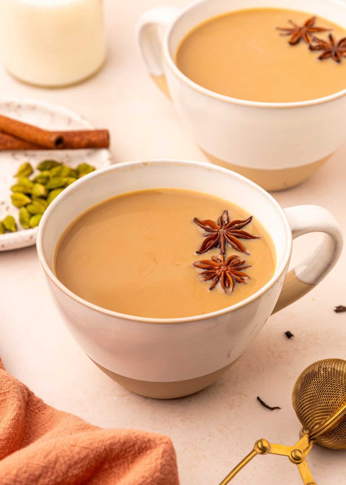

Beverage
Nepali Milk Tea
Warm and comforting tea prepared with milk, tea leaves and aromatic spices.
⏱ 10 min
⭐ 4.8

Beverage
Lassi
A refreshing yogurt-based drink that is perfect for warm days.
⏱ 10 min
⭐ 4.7

Beverage
Masala Chiya
Spiced Nepali tea made with milk, cardamom, cinnamon and ginger.
⏱ 15 min
⭐ 4.9